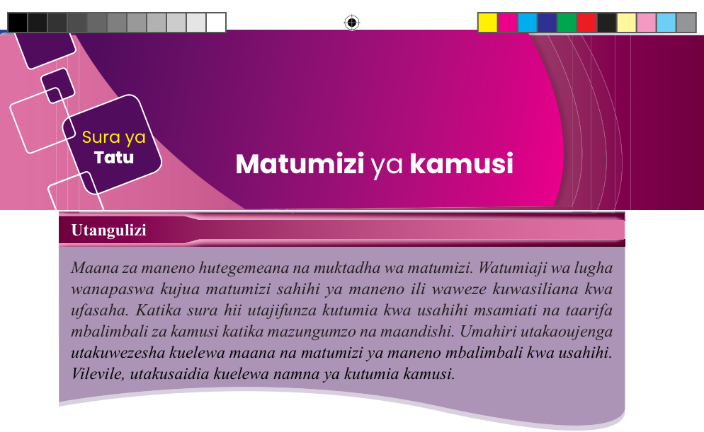
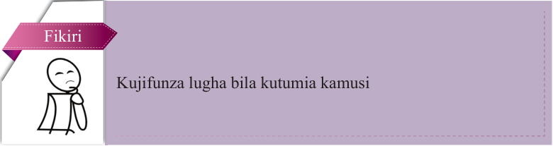
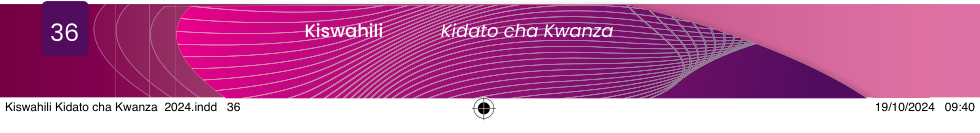

Sura ya
Tatu
Matumizi ya kamusi
Utangulizi
Maana za maneno hutegemeana na muktadha wa matumizi. Watumiaji wa lugha wanapaswa kujua matumizi sahihi ya maneno ili waweze kuwasiliana kwa ufasaha. Katika sura hii utajifunza kutumia kwa usahihi msamiati na taarifa mbalimbali za kamusi katika mazungumzo na maandishi. Umahiri utakaoujenga utakuwezesha kuelewa maana na matumizi ya maneno mbalimbali kwa usahihi. Vilevile, utakusaidia kuelewa namna ya kutumia kamusi.

Fikiri
Kujifunza lugha bila kutumia kamusi
Kutumia msamiati kwa usahihi
Soma habari kuhusu ‘Yaliyosahaulika’ kisha jibu maswali yanayofuata.
Mzee Masika aliishi katika mji mdogo uitwao Amani. Masika alikuwa mtu mwenye furaha na tabasamu wakati wote. Mara nyingi Masika alijitahidi kukumbuka matukio muhimu ya maisha yake ya zamani. Masika alikuwa na mjukuu wake aitwaye Furaha. Masika alikuwa na kawaida ya kutembelea bustani yake kila siku. Siku moja, wakati wa mchana, jua lilikuwa likiwaka sana, akaamua kwenda kutembelea bustani yake.
Akiwa bustanini, jambo lisilo la kawaida lilitokea. Msichana mdogo alimkaribia kwa tabasamu lenye furaha, akisema kwamba alikuwa mjukuu wake aitwaye Furaha. Mh! Furaha? Ndiye nani? Masika aliuliza. Furaha aligundua kuwa babu yake ameanza kupoteza kumbukumbu. Alimkumbusha babu yake kwa kumsimulia matukio yao alipokuwa mtoto. Ghafla! Machozi yalijaa machoni mwa Masika alipogundua kuwa kweli alikuwa amesahau kama ana mjukuu anayeitwa Furaha.

